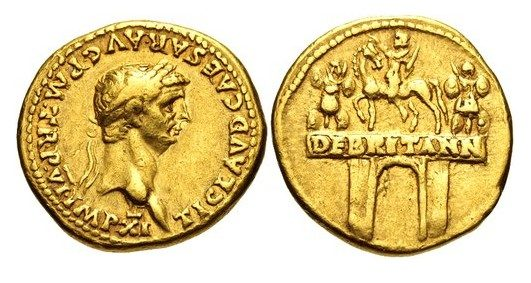
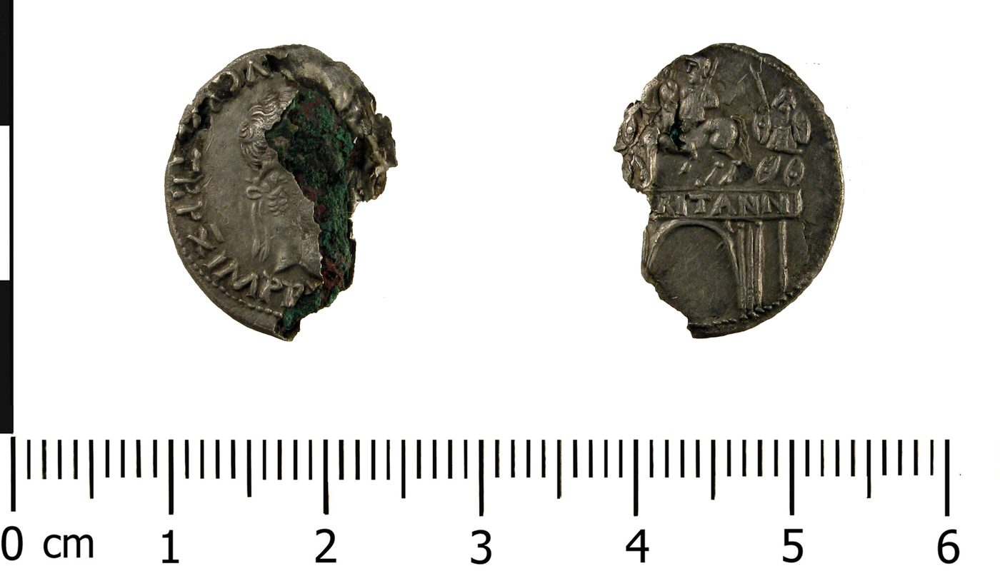
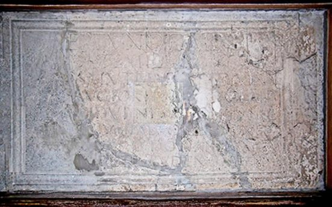

Unit 4 · Boudicca · Lesson 2
The Roman conquest of Britain and ‘Romanisation’
How did Rome take control of southern Britain after 43 CE, and how far did life in Britain really change?
Year 11 Ancient History · Present with → or space · Read on a phone with R

Connect · 3 minutes · books closed · everyone writes · press K for the timer
From Lesson 1: the Iceni
Name one way historians identify the Iceni and one object that shows their culture.
Use a precise term and an example.
Matching the name Tacitus gives them (Annals 12.31) to the places where their coins are found: Norfolk, north Suffolk and fenland Cambridgeshire.
The coin moulds at Fison Way, Thetford (an Iceni mint, probably about 40–50 CE); or, by inference only, the Great Torc from Snettisham (skilled gold and silver work from the area where Iceni coins are later found, though buried about a century before the first certain mention of the Iceni).
Lesson 1 met the Iceni as Rome’s allies in about 47 CE. Today: how Rome came to Britain, and what changed when it did.
Learning intentions and success criteria · 2 minutes
Today’s goals
- understand how Rome conquered southern Britain from 43 CE
- analyse continuity and change under Roman rule, and why ‘Romanisation’ is debated
- outline the conquest from 43 to 51 CE using temporal and causal connectives
- explain how client kingdoms worked and why the Iceni first revolted
- explain one continuity, one change and why historians debate ‘Romanisation’
Syllabus outcomes: AH-11-01 explains continuity and change in the ancient world · AH-11-02 proposes ideas about the varying causes and effects of events and developments · AH-11-07 communicates historical understanding, applying historical knowledge, terms and concepts. Life Skills: AH-LS-03 identifies continuity and change in the ancient world · AH-LS-11 communicates information about the past using historical terms and concepts.
Note-making · the routine for the whole course
How to structure your notes
questions and key terms, written after
short phrases, arrows (→ leads to), abbreviations (c. = about; BCE = Before the Common Era)
- 1A new pageA cue column about a quarter of the page wide; title and date at the top; room for a summary at the bottom.
- 2Listen and look, then writeDon’t copy while a slide is being explained. Phrases, not sentences; a source for every claim.
- 3Dates in orderToday is a sequence: keep a date at the start of each line, so your notes become a timeline.
- 4Write your own notes at the ✎ checkpointThen compare with the model notes, one row at a time. Add what you missed in a second colour.
- 5Cue questions and a summaryUse exam verbs: outline, explain, assess. One checkpoint today: the conquest, 55 BCE to 51 CE. The grid in your booklet holds the rest.
Key vocabulary · add to the unit word wall
Words for today
| Verb (NESA) | Meaning · what the answer must do |
|---|---|
| Outline | ‘Sketch in general terms; indicate the main features of.’ — The main points, briefly and in order. |
| Writing term | Meaning |
| Connective | A word that links ideas: time (by 47 CE), cause (as a result), concession (although). |
| Added today | Meaning |
| Province | A territory outside Italy ruled by Rome, through a governor. |
| Continuity / change | What stays the same over time / what becomes different. |
| Content terms | Meaning |
|---|---|
| Client king | A local ruler allowed to keep his kingdom as Rome’s ally, in return for loyalty. |
| Romanisation | A modern, debated term for the spread of Roman ways of life in the provinces. |
| Legion / auxiliaries | A unit of about 5,000 Roman citizen soldiers / soldiers recruited from non-citizens. |
| Veteran / colonia | A retired soldier / a town of Roman citizens, often veterans; Camulodunum was the first in Britain. |
1 · The conquest · I do — an illustrated mini-lecture · then cold call
From Caesar to Claudius: a visit, then a conquest
- 155 and 54 BCE: Julius Caesar crosses twiceIn 54 BCE he takes hostages and sets a yearly tribute, then takes his whole army back to Gaul. He leaves no garrison.
- 2Almost a century later, 43 CE: Claudius invadesAulus Plautius leads “some legions and auxiliaries” (Tacitus, Agricola 13) and defeats Caratacus and Togodumnus, sons of the dead king Cunobelinus (Cassius Dio 60.20).
- 3Claudius comes in personHe crosses the Thames and “captured Camulodunum, the capital of Cynobellinus”, then goes home after “only sixteen days in Britain” (Cassius Dio 60.21, 60.23).
- 4A victory to celebrateThe Senate gives Claudius the title Britannicus, a triumph and two arches; his coins carry DE BRITANN, ‘over the Britons’.
The deified Julius, the very first Roman who entered Britain with an army, though by a successful engagement he struck terror into the inhabitants and gained possession of the coast, must be regarded as having indicated rather than transmitted the acquisition to future generations.
Tacitus (about 55–120 CE), Agricola 13 (98 CE) · trans. A. J. Church and W. J. Brodribb

Why might Claudius want Britain on his coins?
The conquest brought him glory at Rome: the title Britannicus, a triumph and arches (Cassius Dio, Roman History 60.22). Coins carried that message across the empire. A copy made in Roman times has been found in Staffordshire, far from Rome.
1 · The conquest · I do — the timeline, 43 to 51 CE
43–51 CE: resisters, allies and a revolt
- 1Caratacus fights onBeaten in 43 CE, he keeps resisting in the west. In 51 CE he flees to Cartimandua, queen of the Brigantes, who hands him to the Romans.
- 2Client kings rule as Rome’s alliesCogidubnus in the south (Rome even gave him ‘some of the states’), Cartimandua in the north and Prasutagus of the Iceni in the east rule as Rome’s allies, as long as they stay loyal.
- 3About 47 CE: even allies face disarmingA new governor, Ostorius Scapula, sets out to disarm the peoples he suspects. The Iceni, Rome’s allies, resist and are defeated.
… was put in chains and delivered up to the conquerors, nine years after the beginning of the war in Britain.
Tacitus, Annals 12.36 (early 2nd century CE) · trans. A. J. Church and W. J. Brodribb
1 · The conquest · I do → cold call · a client king’s own inscription
A British king with a Roman name

To Neptune and Minerva, for the welfare of the Divine House by the authority of Tiberius Claudius Togidubnus, great king of Britain, the guild of smiths and those therein gave this temple from their own resources …
Roman Inscriptions of Britain, RIB 91 (English translation, RIB Online). Found in Chichester in 1723. Tacitus calls this king Cogidumnus; historians usually write Cogidubnus.
What in this inscription is British, and what is Roman?
| British | Roman |
|---|---|
| a king: “great king of Britain” | his names Tiberius Claudius, the emperor’s own names |
| his own name, Togidubnus: a Celtic name | the language: Latin |
| the temple is in his kingdom, by his authority | the gods Neptune and Minerva, and prayers for the emperor’s family (“the Divine House”) |
Kingship continued, but this king ruled in a Roman way, for Rome, and Tacitus says Rome gave him ‘some of the states’. One inscription shows one king, not ‘the Britons’.
Notes checkpoint
The conquest, 55 BCE to 51 CE
2 · Allies and Rome · We do — supported reading · annotate who, when, why
Tacitus on client kings: ‘instruments of dominion’
Aulus Plautius was the first governor of consular rank, and Ostorius Scapula the next. Both were famous soldiers, and by degrees the nearest portions of Britain were brought into the condition of a province, and a colony of veterans was also introduced. Some of the states were given to king Cogidumnus, who lived down to our day a most faithful ally. So was maintained the ancient and long-recognised practice of the Roman people, which seeks to secure among the instruments of dominion even kings themselves.
Tacitus (about 55–120 CE), a Roman senator, Agricola 14, a life of his father-in-law, written in 98 CE · trans. A. J. Church and W. J. Brodribb
- 1Who and when?A Roman senator, writing in 98 CE, about events of about 43–60 CE.
- 2Hard wordsdominion: rule, control · states: peoples or territories · consular rank: a senior ex-consul.
What does ‘instruments of dominion’ reveal about client kings?
To Rome, client kings were tools of Roman rule, not equal partners: Rome let them rule, and even gave Cogidumnus ‘some of the states’, because loyal kings did Rome’s work of control. Tacitus calls this an “ancient and long-recognised practice”, so it was Roman policy, not a favour to one king.
2 · Allies and Rome · We do — supported reading · then cold call
About 47 CE: why would allies fight Rome?
… he prepared to disarm all whom he suspected, and to occupy with encampments the whole country to the Avon and Severn. The Iceni, a powerful tribe, which war had not weakened, as they had voluntarily joined our alliance, were the first to resist.
Tacitus, Annals 12.31 (early 2nd century CE) · trans. A. J. Church and W. J. Brodribb · the Iceni lose the battle that follows (12.31–32)
He deprived the conquered of their arms …
Cassius Dio, Roman History 60.21 (early 3rd century CE) · trans. E. Cary
- 1Hard wordssuspected: did not trust · encampments: army camps · voluntarily: by their own choice.
Why would allies resent being disarmed?
Claudius had disarmed the conquered in 43 CE (Dio), but the Iceni had chosen to be Rome’s allies and had not been beaten in war. Being disarmed treated them as suspects, even as conquered people: it took away their power to defend themselves and showed that alliance with Rome gave them no security.
What does Tacitus not tell us?
What the Iceni themselves said or wanted: we have only a Roman senator’s account, written about 70 years later.
2 · Allies and Rome · We do — complete two rows of the grid in your booklet
Before and after 43 CE: what continued, what changed?
Fill both rows from today’s sources: who ruled, and arms and alliances.
| Before 43 CE | After 43 CE | Continuity or change? | Evidence | |
|---|---|---|---|---|
| Who ruled? | kings of separate peoples, often rivals (Cunobelinus: Lesson 1) | a Roman governor over a new province; some British kings ruled as Rome’s allies, and Cogidubnus was given ‘some of the states’ | both: change at the top; kingship continued, but now as Rome’s ‘instruments’ | Tacitus, Agricola 14; the Chichester inscription (RIB 91) |
| Arms and alliances | armed peoples who fought each other, and in 43 CE fought Rome | the conquered disarmed (43 CE); by about 47 CE Ostorius moved to disarm even allies he suspected, such as the Iceni | change: even allies could be disarmed if Rome suspected them, so alliance gave no security | Dio 60.21; Tacitus, Annals 12.31 |
Add a third row of your own: ways of life. Use the Chichester inscription and the Iceni coins made at Fison Way (Lesson 1). Then read ‘Romanisation’: a debated word (Millett and Mattingly) before you decide whether it is continuity or change.
2 · Allies and Rome · We do — two historians, then cold call
‘Romanisation’: a modern word, and a debate
The word is modern. Francis Haverfield used it in a paper to the British Academy in 1905, The Romanization of Roman Britain. Historians still argue about who drove the change, and how far it reached.
British elites chose Roman ways to gain or keep power. Summing up his book, Millett writes that Romanisation was “largely indigenous in its motivation”: people used Roman styles “to assert, project and maintain their social status”.
Britons experienced Roman rule in very different ways. A reviewer sums up his view: “the Roman Empire was one of discrepant experiences” (that is, very different ones). In Mattingly’s own words, his book is “very much concerned with the experience of people in Britain under Roman rule”; another reviewer calls it “a marked interpretative shift from the Romanization perspective”.
Which view fits Togidubnus, the king in the Chichester inscription? Which fits the Iceni in about 47 CE?
Togidubnus fits Millett: a British king taking Roman names, gods and language. The Iceni fit Mattingly better: allies who were threatened with disarmament and fought back did not experience Rome as a road to status. So ‘Romanisation’ needs care: whose ways changed, and how far?
3 · You do · Writing focus · 8 minutes · I do → We do → apply
Writing focus: outline the main points, linked in order
Outline: ‘Sketch in general terms; indicate the main features of.’ NESA, Glossary of key words
Outline Roman contact with Britain from 55 BCE to 43 CE.
Worked example · written for this lesson
In 55 and 54 BCE Julius Caesar crossed to Britain twice but left no garrison; almost a century later, in 43 CE, Claudius’s army under Aulus Plautius invaded, and as a result southern Britain became a Roman province.
Time: puts the main points in order
Contrast: a limit on the first point
Cause: only where one event led to the next
Which sentence joins these two events as Tacitus reports them? Prasutagus, king of the Iceni, names the emperor co-heir · after his death, his kingdom is plundered by centurions.
Tacitus, Annals 14.31: Prasutagus hoped this “token of submission would put his kingdom and his house out of the reach of wrong. But the reverse was the result …”
- APrasutagus named the emperor co-heir to protect his kingdom, and as a result it was plundered by centurions after his death.
- BPrasutagus named the emperor co-heir to protect his kingdom, and then it was plundered by centurions after his death.
- CPrasutagus named the emperor co-heir to protect his kingdom, but it was plundered by centurions after his death.
- DPrasutagus named the emperor co-heir to protect his kingdom because it was plundered by centurions after his death.
To protect gives his reason; but marks the reverse of what he hoped, as Tacitus says. A claims the will caused the plunder: Tacitus says only that “the reverse” of his hope happened. B is only a sequence: it hides the contrast. D turns cause and effect round.
Begin your outline of 43–51 CE with a time connective, and use a cause connective only where the evidence shows one event led to the next. Frame: “In 43 CE …; by about 47 CE …; as a result / consequently …; in 51 CE …” Your Writing toolkit (booklet pages 3–4): connectives by function.
3 · You do · 7 minutes · deconstruct first · then write · press K for the timer
Outline the conquest of Britain from 43 to 51 CE.
Deconstruct it: what does this question ask you to do?
- Verb
- outline: the main features, briefly and in order; no explanation or judgement needed
- Topic
- the Roman conquest of Britain
- Limits
- 43 to 51 CE only: three events, the invasion, the Iceni revolt of about 47 CE, Caratacus’s capture
- Do
- three sentences in time order, linked by time connectives, with a cause connective only where one event led to the next
- The invasion of 43 CE.
- The Iceni revolt of about 47 CE.
- Caratacus’s capture in 51 CE.
Then highlight every connective and label it: time, contrast or cause.
Frame: “In 43 CE …; by about 47 CE …; as a result …; in 51 CE …” Connective bank:
Check first: what turns three facts into an outline?
Order and links. The main points come in time order, joined by connectives: time connectives carry the sequence, and a cause connective appears only where the evidence shows one event led to another. No extra detail, and no judgement.
Add one concession that is true to the evidence (although, yet), and check the hinge rule: does your connective match what the source says?
3 · You do · 12 minutes · deconstruct first · then write · press K for the timer
Explain the continuity and change in southern Britain after 43 CE.
Deconstruct it: what does this question ask you to do?
- Verb
- explain: ‘Relate cause and effect. Make the relationships between things evident. Provide why and/or how.’ (NESA, Glossary of key words). Department advice: at Stage 6, say which mattered more
- Topic
- what continued and what changed, and why
- Limits
- southern Britain; after 43 CE, up to about 60 CE (today’s evidence)
- Do
- a topic sentence naming a change and a continuity; evidence for each from your grid, with its source; why each one happened; ‘Romanisation’ used with care; end with which mattered more
- Open with a topic sentence: what changed, and what continued.
- Use evidence from your grid’s three rows, each with its source.
- End with a judgement: which mattered more, and why.
Frame: “After 43 CE, … changed, but … continued. … For example, … (source). … Of these, … mattered more, because …”
Check first: how do you use ‘Romanisation’ with care?
Treat it as a modern, debated label: put it in quotation marks, and say whose ways changed (a king? the Iceni?) and how far. Not “the Britons were Romanised”.
Compare Millett’s elite-led ‘Romanisation’ with Mattingly’s stress on different experiences of Roman rule: which better explains why an allied people like the Iceni revolted?
3 · You do · after you write · compare yours with the models
Model answers: the outline and the paragraph
In 43 CE Claudius’s army under Aulus Plautius invaded southern Britain, and Claudius himself captured Camulodunum. By about 47 CE the new governor, Ostorius Scapula, was preparing to disarm peoples he suspected; as a result the Iceni, who had joined Rome’s alliance by choice, rose against him and were defeated. Meanwhile Caratacus fought on in the west until 51 CE, when Cartimandua, queen of the Brigantes, handed him over to the Romans.
Check yours: three main points, in order · time connectives · one cause, where the source shows one.
After 43 CE, southern Britain changed most in who held power, while some British rulers and customs continued. A Roman governor now ruled a new province, and by about 47 CE Ostorius Scapula was preparing ‘to disarm all whom he suspected’, even allies such as the Iceni (Tacitus, Annals 12.31). Yet Rome did not sweep British kings away: Tacitus says Rome made ‘even kings themselves’ its ‘instruments of dominion’ (Agricola 14), so Cogidubnus and Prasutagus ruled their peoples as allies, Cogidubnus even gaining ‘some of the states’, and the Iceni probably went on making their own silver coins at Fison Way in about 40–50 CE. Some kings took on Roman ways: the Chichester inscription gives a British king the Roman names Tiberius Claudius, in Latin, on a temple to Roman gods built by his authority. How far such ‘Romanisation’ went is debated, since Millett saw British elites choosing Roman ways to keep their status, whereas Mattingly stresses how differently Britons experienced Roman rule. Of these, the change in power mattered more, because even the kings who stayed now ruled as Rome’s ‘instruments’.
Check yours: a change and a continuity named · evidence with sources · why · ‘Romanisation’ with care · which mattered more.
Finish your notes If time · or at home
Summary: three sentences
- How did Rome take control of southern Britain?
- How did client kingdoms work, and why did the Iceni first revolt?
- Why do historians debate ‘Romanisation’?
After Julius Caesar’s two short visits in 55 and 54 BCE, Claudius’s invasion of 43 CE made southern Britain a Roman province, although Caratacus resisted until he was handed over in 51 CE. Rome let loyal British rulers such as Cogidubnus, Cartimandua and Prasutagus rule as its allies, but in about 47 CE its governor tried to disarm even allies he suspected, and the Iceni rose against him. Historians debate ‘Romanisation’ because it is a modern label: Millett saw British elites choosing Roman ways, whereas Mattingly stresses how differently Britons experienced Roman rule.
Check · gesture vote · 4 minutes · thumbs up, sideways or down on “3, 2, 1, show”
“The Britons became Roman after 43 CE.”
Agree
Partly
Disagree
Only partly, and unevenly. ‘The Britons’ were many peoples. One king took the Roman names Tiberius Claudius and authorised a temple to Roman gods, recorded in Latin (the Chichester inscription), but others resisted (Caratacus until 51 CE; the Iceni in about 47 CE), and how far Britons ‘became Roman’ is exactly what historians debate (Millett, Mattingly).
Exit ticket · 3 minutes · before you leave
Finish the sentence
“‘Romanisation’ is a debated term because …”
that it is a modern label (Haverfield used it in 1905), not an ancient one; that historians disagree about who drove the change (British elites copying Roman ways, for Millett) and how far it reached (very different experiences of Roman rule, for Mattingly); and, best of all, an example of each, such as the Chichester king and the Iceni.
Then check yourself against today’s three “I can” statements. Next lesson: ruling the province: governor, procurator, veterans and the imperial cult.
Practice and review · 1 of 4 · true, false, justify
True or false? Justify your answer
- 1Julius Caesar conquered southern Britain in 55 and 54 BCE. False — he crossed twice, took hostages and set a tribute, then took his army back to Gaul; Tacitus says he only “indicated” Britain to later Romans (Agricola 13).
- 2Claudius spent only about two weeks in Britain. True — Dio says “only sixteen days in Britain” (60.23), long enough to capture Camulodunum.
- 3Client kings were British rulers whom Rome defeated and removed. False — they ruled as Rome’s allies, and Rome even gave Cogidumnus ‘some of the states’; Tacitus calls them “instruments of dominion” (Agricola 14).
- 4The Iceni fought Rome in about 47 CE even though they were Rome’s allies. True — they had “voluntarily joined our alliance”, but were “the first to resist” Ostorius’s plan to disarm (Annals 12.31).
- 5Roman soldiers captured Caratacus on the battlefield in 51 CE. False — he escaped to Cartimandua, queen of the Brigantes, who handed him over to the Romans (Annals 12.36).
- 6‘Romanisation’ is the word the Romans used for Britons taking on Roman ways. False — it is a modern label (Haverfield used it in 1905), and historians debate what it describes.
Practice and review · 2 of 4 · writing · deconstruct each question first
Connectives that match the evidence
“Claudius captured Camulodunum in 43 CE, and as a result Cartimandua handed Caratacus over in 51 CE.”
What is wrong with as a result? Rewrite the sentence.
Claudius captured Camulodunum in 43 CE, but Caratacus fought on in the west until 51 CE, when Cartimandua handed him over to the Romans.
Why: eight years and many events separate the two, so as a result claims a cause the evidence does not show; but and until are true to it.
Outline the client kingdoms in Britain between 43 and 60 CE. (3 sentences)
After 43 CE Rome let some British rulers keep, or even gain, kingdoms as allies, as long as they stayed loyal. In the south Cogidubnus ruled with Roman names and, Tacitus says, stayed loyal into his own day, while in the north Cartimandua ruled the Brigantes and in 51 CE handed Caratacus to Rome. In the east Prasutagus ruled the Iceni until his death, some time before the revolt of 60 or 61 CE.
Practice and review · 3 of 4 · extension · two historians
Millett or Mattingly: which explains the Iceni better?
Step by step they were led to things which dispose to vice, the lounge, the bath, the elegant banquet. All this in their ignorance, they called civilization, when it was but a part of their servitude.
Tacitus, Agricola 21 (98 CE) · trans. A. J. Church and W. J. Brodribb
Compare Millett’s elite-led ‘Romanisation’ with Mattingly’s stress on different experiences of Roman rule: which better explains why an allied people like the Iceni revolted?
Mattingly’s stress on different experiences of Roman rule explains the Iceni’s revolt better than Millett’s elite-led ‘Romanisation’, although each explains part of the picture. Millett’s view, in his own summing-up, treats Roman ways as something British elites chose ‘to assert, project and maintain their social status’, and it fits a king such as Togidubnus, who took the Roman names Tiberius Claudius. But the Iceni had ‘voluntarily joined our alliance’ and still rose when Ostorius moved ‘to disarm all whom he suspected’ (Annals 12.31): their experience of Rome was the threat to their arms, not a gain in status. Mattingly’s view makes room for allies like these, whose experience of Roman rule was very different from a loyal king’s. Yet both views rest on thin evidence for the Iceni, who left no writing; even Tacitus’s remark that Britons called Roman luxuries ‘civilization’ is a Roman senator’s view. On balance, Mattingly’s approach explains the revolt of about 47 CE better, because it asks how Rome felt to the people it ruled.
Practice and review · 4 of 4 · cover your notes and answer from memory
Quick checks
- How did Caesar’s visits of 55 and 54 BCE differ from Claudius’s invasion of 43 CE? Caesar took hostages and tribute, then left with his whole army; Claudius’s invasion stayed, and southern Britain became a province.
- What happened to Caratacus between 43 and 51 CE? Beaten in 43 CE, he fought on in the west; in 51 CE Cartimandua, queen of the Brigantes, handed him to the Romans (Annals 12.36).
- Name three client rulers and their peoples or regions. Cogidubnus (the south, Chichester), Cartimandua (the Brigantes), Prasutagus (the Iceni).
- What does Tacitus mean by ‘instruments of dominion’? Client kings were tools of Roman rule: Rome kept loyal kings because they helped it control Britain (Agricola 14).
- Why did the Iceni resist in about 47 CE? Ostorius Scapula set out to disarm peoples he suspected, even allies like the Iceni, who had joined Rome by choice (Annals 12.31).
- What does outline ask for, and when should you use a cause connective? Outline: the main features, briefly and in order. A cause connective only where the evidence shows one event led to another.
Sources and credits
Where everything comes from
Tacitus, Agricola 13, 14, 17–18 and 21: trans. A. J. Church and W. J. Brodribb (public domain), Perseus Digital Library; Annals 12.31–33, 12.36, 12.40 and 14.31, and Histories 3.45: trans. A. J. Church and W. J. Brodribb (1876, public domain), Perseus (Perseus texts CC BY-SA 3.0 US). Cassius Dio, Roman History 60.19–23: trans. E. Cary (Loeb, vol. VII, 1924), LacusCurtius (public domain in the US; quoted briefly). Caesar, Gallic War 5.22–23: trans. W. A. McDevitte and W. S. Bohn (1869, public domain), Perseus.
Roman Inscriptions of Britain, RIB 91 (RIB Online, text CC BY 4.0). Martin Millett, The Romanization of Britain (Cambridge University Press, 1990): the opening of chapter 9, ‘Epilogue: Decline and Fall?’, as shown on Cambridge Core (quoted briefly). David Mattingly, An Imperial Possession (Allen Lane, 2006), as reviewed by R. Kurzmann, Bryn Mawr Classical Review 2007.04.22, and S. Willis, American Journal of Archaeology 112.4 (2008) (quoted briefly). F. Haverfield, The Romanization of Roman Britain, 3rd edition (1915), preface, Internet Archive (public domain).
Facts: University of Warwick, Warwick Classics Network, “Cartimandua and the Brigantes” and “Cogidubnus”; Portable Antiquities Scheme record WMID-093BA4 (validated version, 2020); Norfolk Heritage Explorer, NHER 5853 (Fison Way), as in Lesson 1. Timeline drawn for this lesson. The NESA Glossary of key words (definitions quoted word for word). Teacher resource: 02 Roman Conquest of Britain (class notebook), for leads only.
Outcomes and content: NSW Education Standards Authority (NESA), Ancient History 11–12 Syllabus (2024). © NESA.
- A gold coin of Claudius celebrating victory in Britain (DE BRITANN), struck in Rome about 46–47 CE · Photo: Classical Numismatic Group (CNG) · CC BY-SA 2.5 · source
- A Roman-period copy of a Claudian silver coin with DE BRITANN, about 46–54 CE, found in Staffordshire · Photo: Vic Allnatt, Birmingham Museums Trust / Portable Antiquities Scheme · CC BY 2.0 · source
- The Chichester inscription of the British king Togidubnus (RIB 91), 43–80 CE · Photo: Udimu; retouched by Hic et nunc · CC BY-SA 3.0 · source

_(FindID_782857).jpg){kind=link}

All images are openly licensed, and were resized or cropped for the web. Each is shared under the licence shown.